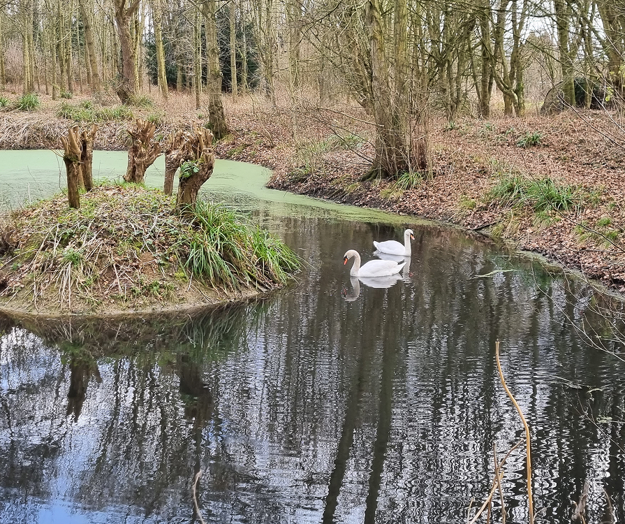

The development of Rosie’s Wood began in 1992 when Tony Raybone began planting more than 4,000 oak, ash, holly, yew, maple and fir trees on land he owned in the village of Cambridge.
Rosie’s Wood was formally opened in 2002 over the Queen’s Golden Jubilee Weekend, following the formation of a trust dedicated to caring for the woodland. An Open Day held to mark the opening and featured a performance by Patsy Gamble’s Jazz Band – The foundation of the popular ‘Jazz in the Wood’ events

Since then, Rosie’s Wood on the banks of the River Cam has become a much-loved community asset. Plants and paths have been installed and the wood is now a wildlife haven, home to numerous species of animals. Rosie’s is a place of relaxation and contemplation, but it’s also a place of fun with the much loved ‘Jazz in the Wood’ raising money for the wood’s maintenance.